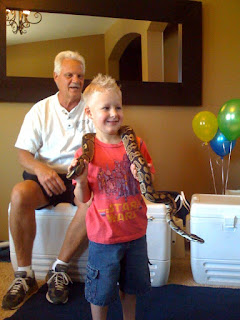

Recovered weblog entry
04/18/09 - Weird logic
For those of you who may have missed it at the Moblah'g, check this out.

No...he still won't pet a dog. But he will allow a six foot python around his neck. Love that boy.

Recovered weblog entry
For those of you who may have missed it at the Moblah'g, check this out.

No...he still won't pet a dog. But he will allow a six foot python around his neck. Love that boy.